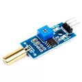
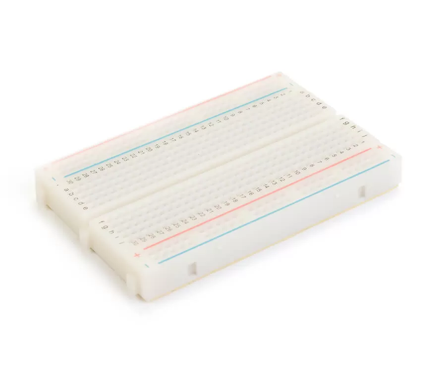
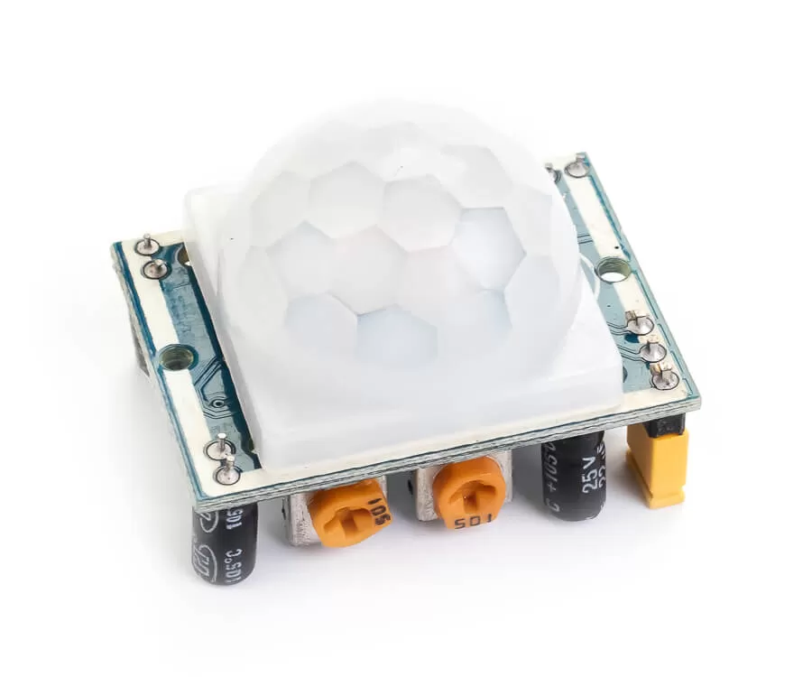
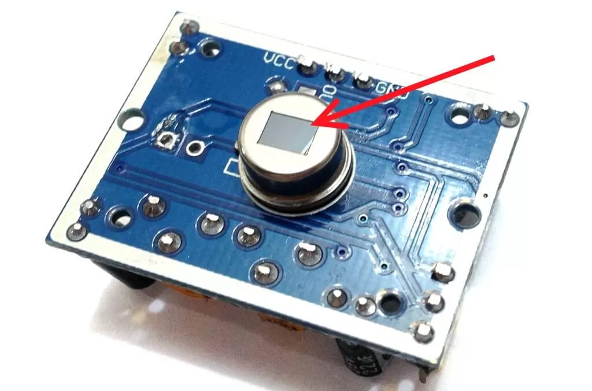
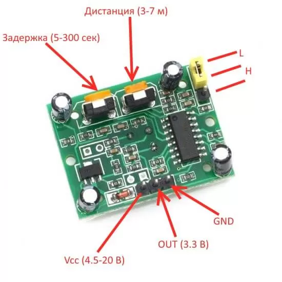
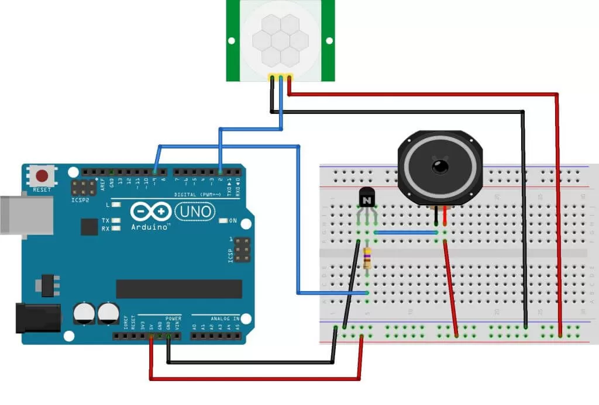
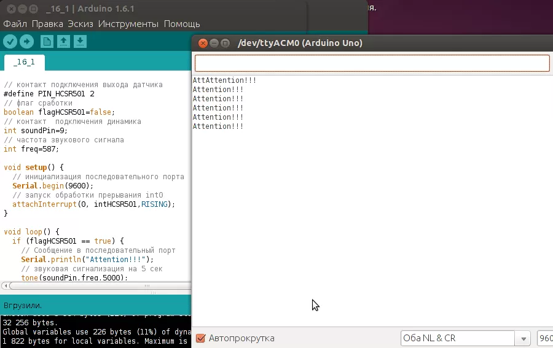
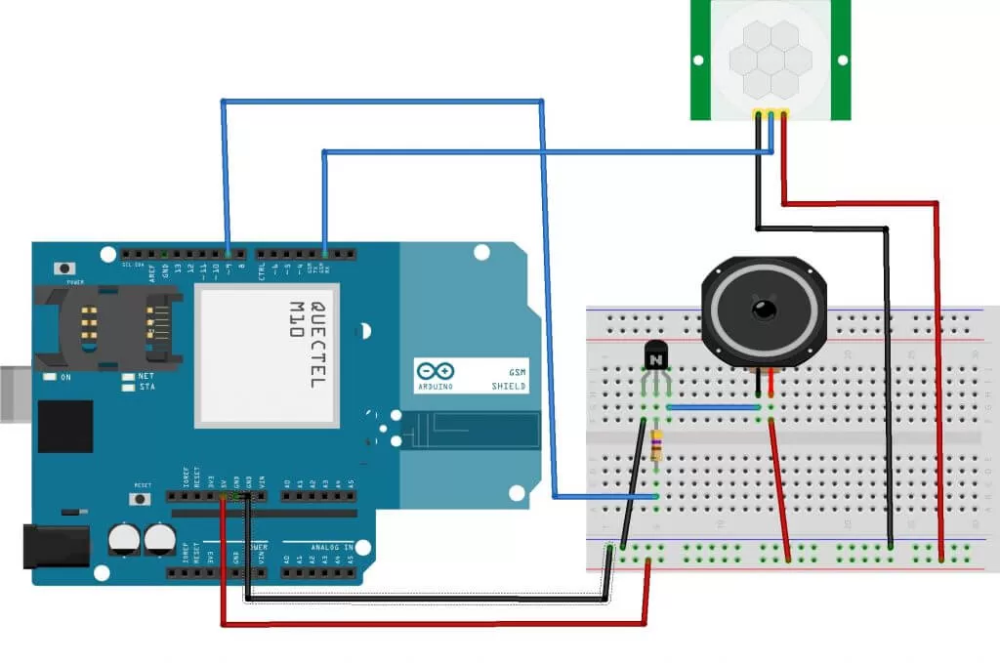

Инфракрасный датчик движения HC-SR501
База знаний
-
Датчики
-
Пространства
-Инфракрасный датчик движения HC-SR501
Датчики / Сенсоры

Товары

Много
590 руб. /шт

Инфракрасный датчик движения HC-SR501
Много
250 руб. /шт
456 руб. /шт
-45%
Много
1 690 руб. /шт
Модуль датчика движения (или присутствия) HCSR501 на основе пироэлектрического эффекта состоит из PIR-датчика 500BP с дополнительной электрической развязкой на микросхеме BISS0001 и линзы Френеля.
Содержание
Обзор датчика пространства HC-SR501
Модуль датчика движения (или присутствия) HCSR501 на основе пироэлектрического эффекта состоит из PIR-датчика 500BP (рис. 1) с дополнительной электрической развязкой на микросхеме BISS0001 и линзы Френеля, которая используется для увеличения радиуса обзора и усиления инфракрасного сигнала (рис. 2). Модуль используется для обнаружения движения объектов, излучающих инфракрасное излучение. Чувствительный элемент модуля – PIR-датчик 500BP. Принцип его работы основан на пироэлектричестве. Это явление возникновения электрического поля в кристаллах при изменении их температуры.
Управление работой датчика осуществляет микросхема BISS0001. На плате расположены два потенциометра, с помощью первого настраивается дистанция обнаружения объектов (от 3 до 7 м), с помощью второго - задержка после первого срабатывания датчика (5 - 300 сек). Модуль имеет два режима – L и H. Режим работы устанавливается с помощью перемычки. Режим L – режим единичного срабатывания, при обнаружении движущегося объекта на выходе OUT устанавливается высокий уровень сигнала на время задержки, установленное вторым потенциометром. На это время датчик не реагирует на движущиеся объекты. Этот режим можно использовать в системах охраны для подачи сигнала тревоги на сирену. В режиме H датчик срабатывает каждый раз при обнаружении движения. Этот режим можно использовать для включения освещения. При включении модуля происходит его калибровка, длительность калибровки приблизительно одна минута, после чего модуль готов к работе. Устанавливать датчик желательно вдали от открытых источников света.

Рисунок 1. PIR-датчик 500BP
Рисунок 2. Линза Френеля
Технические характеристики HC-SR501
Подключение инфракрасного датчика движения к Arduino
Модуль имеет 3 вывода (рис. 3):

Рисунок 3. Назначение контактов и настройка HC-SR501
Подключим модуль HC-SR501 к плате Arduino (Схема соединений на рис. 4) и напишем простой скетч, сигнализирующий звуковым сигналом и сообщением в последовательный порт, при обнаружении движущегося объекта. Для фиксации срабатываний микроконтроллером будем использовать внешние прерывания на вход 2. Это прерывание int0.

Рисунок 4. Схема соединений подключения модуля HC-SR501 к плате Arduino
Загрузим скетч из листинга 1 на плату Arduino и посмотрим как датчик реагирует на препятствия (см. рис. 5). Модуль установим в режим работы L.
Листинг 1
// Скетч к обзору датчика движения/присутствия HC-SR501
// http:// http://makerplus.ru
//
// контакт подключения выхода датчика
#define PIN_HCSR501 2
// флаг сработки
boolean flagHCSR501=false;
// контакт подключения динамика
int soundPin=9;
// частота звукового сигнала
int freq=587;
// инициализация последовательного порта
// запуск обработки прерывания int0
attachInterrupt(0, intHCSR501,RISING);
// Сообщение в последовательный порт
Serial.println("Attention!!!");
// звуковая сигнализация на 5 сек
// обнулить флаг сработки
flagHCSR501 = false;
// обработка прерывания
// установка флага сработки датчика
flagHCSR501 = true;

Рисунок 5. Вывод данных в монитор последовательного порта
С помощью потенциометров экспериментируем с длительностью сигнала на выходе OUT и чувствительностью датчика (расстоянием фиксации объекта).
Создадим пример отправки sms при срабатывании датчика движения/присутствия на охраняемом объекте. Для этого будем использовать GPS/GPRS шилд. Нам понадобятся следующие детали:
Соберем схему соединений согласно рис. 6.

Рисунок 6. Схема соединений
При срабатывании датчика вызываем процедуру отправки sms с текстовым сообщением Attention!!! на номер PHONE. Содержимое скетча представлено в листинге 2. GSM/GPRS шилд в режиме отправки sms потребляет ток до 2 А, поэтому используем внешний источник питания 12В 2А.
Листинг 2
// Скетч 2 к обзору датчика движения/присутствия HC-SR501
// отправка sms при срабатывании датчика
// http:// http://makerplus.ru
// контакт подключения выхода датчика
#define PIN_HCSR501 2
// флаг сработки
boolean flagHCSR501 false;
// контакт подключения динамика
int soundPin=9;
// частота звукового сигнала
int freq=587;
// библиотека SoftwareSerial
#include <SoftwareSerial.h>
// номер телефона для отправки sms
#define PHONE "+79034461752"
// Выводы для SoftwareSerial (у вас могут быть 2,3)
// инициализация последовательного порта
// запуск обработки прерывания int0
attachInterrupt(0, intHCSR501,RISING);
// для обмена с GPG/GPRS шилдом
// Сообщение в последовательный порт
Serial.println("Attention!!!");
// звуковая сигнализация на 5 сек
// отправить sms
// обнулить флаг сработки
flagHCSR501 = false;
// обработка прерывания
// установка флага сработки датчика
flagHCSR501 = true;
// подпрограмма отправки sms
// AT-команда установки text mode
// номер телефона
// сообщение
// ASCII код ctrl+z – окончание передачи
1. Модуль не срабатывает при движении объекта
2. Датчик срабатывает слишком часто
�